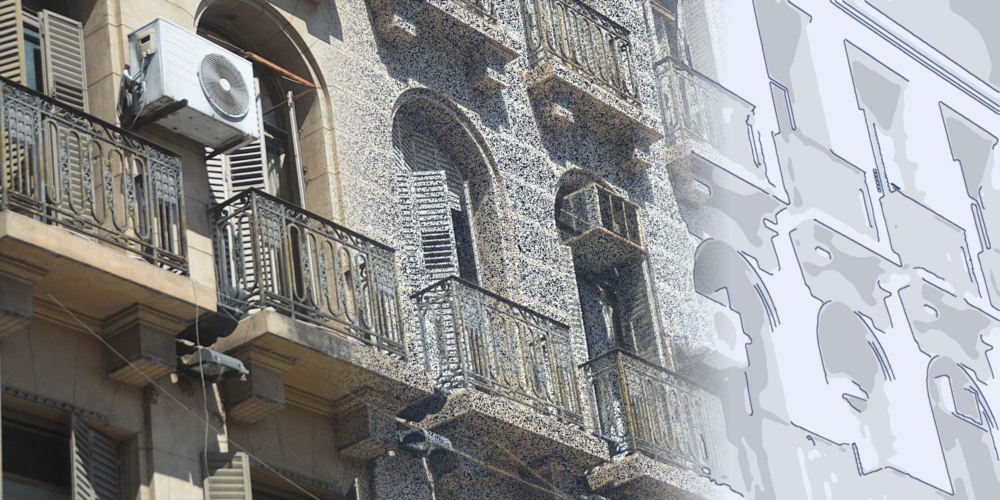
Relevamiento 3D con escáner láser, planos conforme a obra y modelos BIM de edificios patrimoniales, plantas industriales y obras.
La mayoría de los edificios no tiene planos, o tiene planos que no coinciden con lo que se construyó.
Reformas que nunca se dibujaron, medidas que cambiaron en obra, archivos que se perdieron entre un estudio y otro. Y sobre esa información se decide: una restauración, una ampliación, una verificación estructural, una licitación, un equipo nuevo.
Medir a mano lleva días, deja huecos y obliga a volver. Proyectar sobre suposiciones termina en sorpresas, adicionales y discusiones en obra.
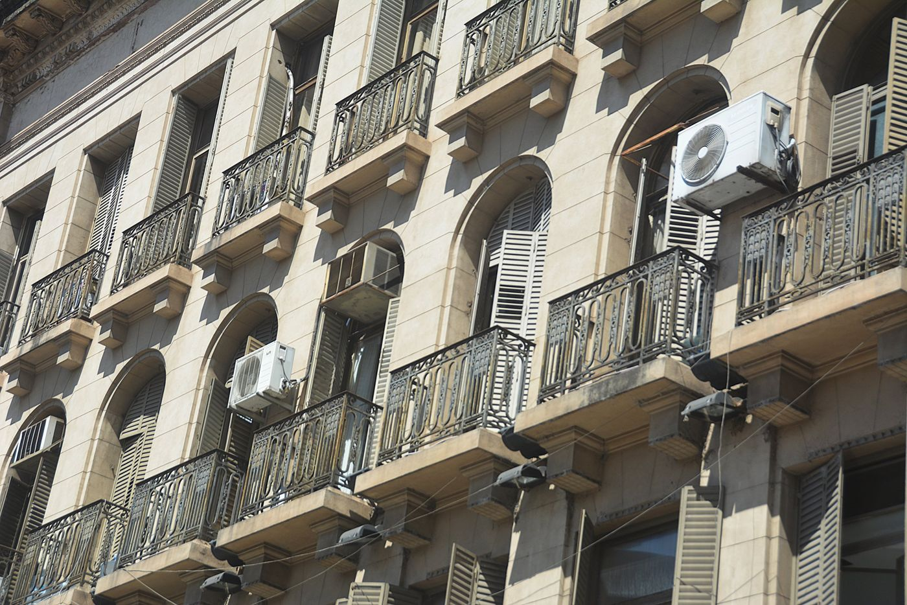
Relevamos el edificio, la planta o la obra tal como está hoy, y lo convertimos en información con la que tu equipo puede trabajar.
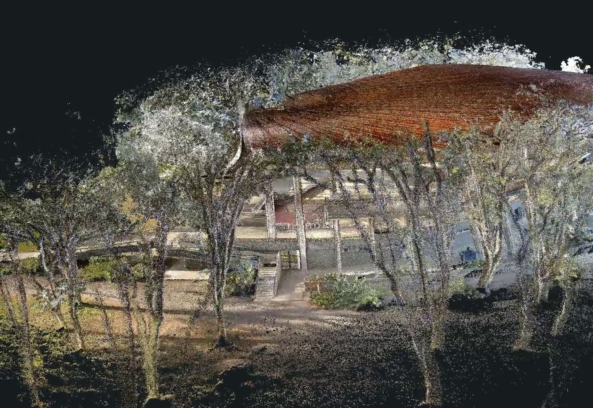
Recorremos el lugar con escáner láser (LiDAR), dron y GPS. En una visita capturamos todo el espacio, por dentro y por fuera, con color y sin frenar la actividad.
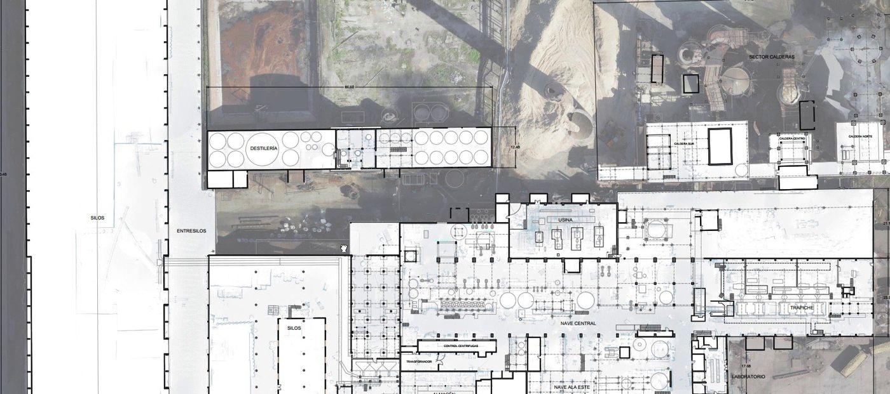
Convertimos la captura en lo que necesitás: plantas, cortes y vistas en CAD, o un modelo BIM en Revit o en formato abierto IFC.
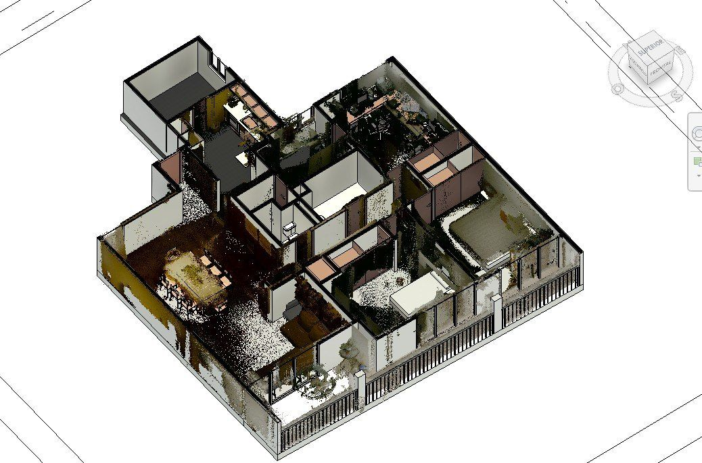
Organizamos la información del edificio para que no se vuelva a perder y se pueda actualizar en el tiempo: el modelo y el edificio real, conectados.
Scan to BIM es pasar de lo construido a un modelo digital: escaneamos, obtenemos millones de puntos medidos con color (la nube de puntos) y sobre ellos dibujamos planos o modelamos el edificio.
Un gemelo digital es ese modelo cuando se mantiene vivo: se actualiza cuando el edificio cambia y concentra su información (planos, estado, intervenciones). Hay escalones: la mayoría de los proyectos empieza por un buen relevamiento y un modelo confiable, y crece desde ahí.
Trabajamos con un escáner que se lleva en la mano mientras se camina (tecnología SLAM): mide todo el recorrido, sin estaciones fijas, por eso es rápido en interiores, pasillos, techos y lugares de difícil acceso.
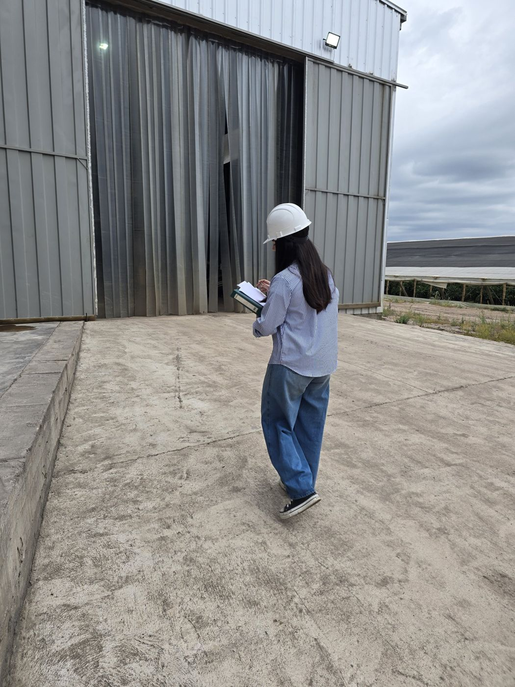
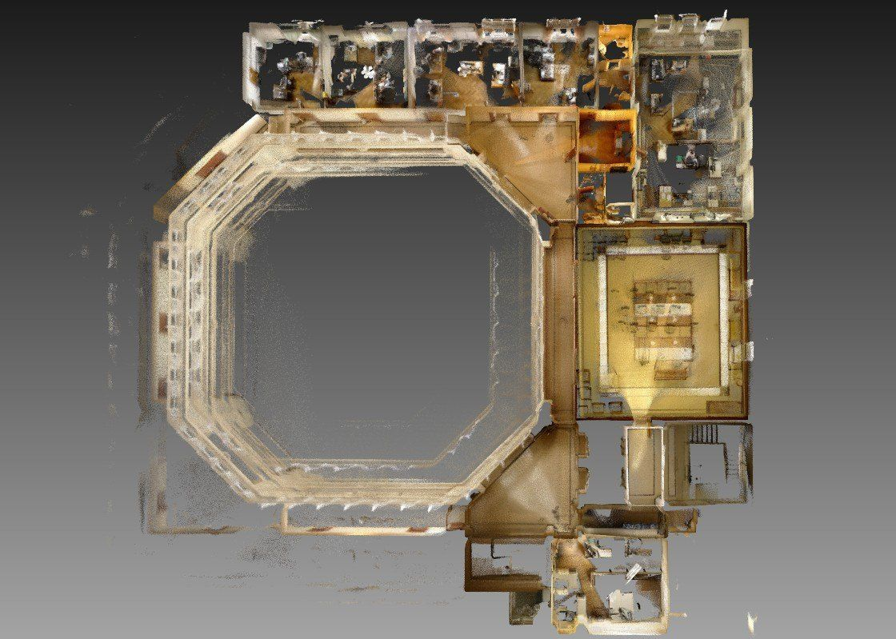
Edificios históricos, sedes de organismos públicos, iglesias, museos.
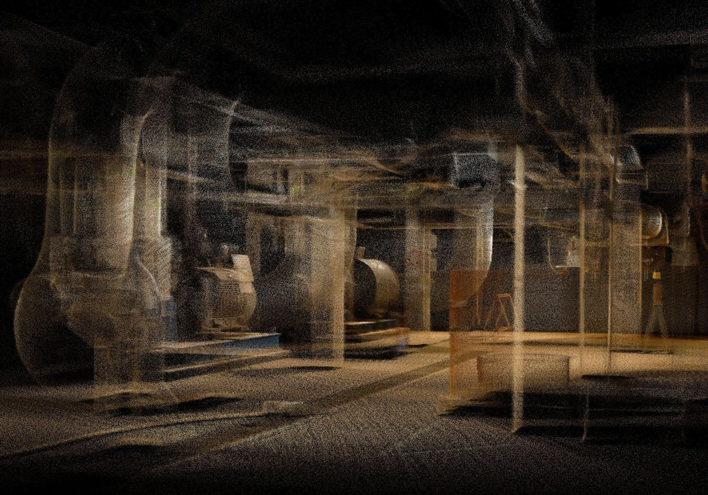
Plantas, galpones, tanques, cañerías.
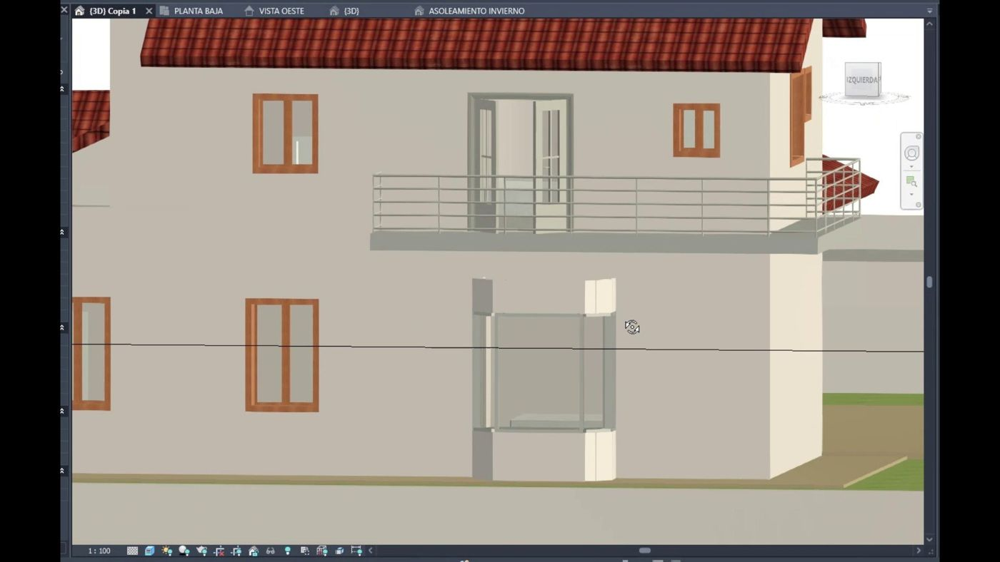
Estudios, constructoras y desarrolladoras.
Y también en ingeniería civil: puentes, alcantarillas, túneles, canales con mucha vegetación y movimientos de suelo de mediana extensión.
Cada entrega dice por escrito con qué exactitud se midió y cómo se controló. Sin promesas genéricas.
Si el proyecto lo pide, el relevamiento queda en coordenadas oficiales, listo para cruzar con catastro, redes o vuelos.
Ningún equipo resuelve todo solo. Combinamos métodos según el edificio y lo que hay que entregar.
| Herramienta | Mejor uso | Qué aporta |
|---|---|---|
| Escáner LiDAR móvil (SLAM) | Interiores, fachadas, galpones, instalaciones, espacios complejos. | Captura completa y rápida caminando, con color. |
| Dron (fotogrametría) | Techos, cubiertas, terrenos y entorno. | Vista aérea, ortofotos y modelos de lo que no se ve desde el piso. |
| Cámara profesional | Fachadas y detalles ornamentales. | Texturas de alta definición para análisis de restauración. |
| GNSS (GPS de precisión) y nivel | Puntos de control y georreferencia. | Control de calidad del relevamiento y coordenadas oficiales. |
| Software BIM y CAD | Modelado y documentación. | Revit, AutoCAD / Civil 3D, CloudCompare, RealityScan. Entregas en formatos abiertos (IFC). |
La exactitud de un relevamiento depende del equipo, la distancia y el control con puntos medidos. Por eso la informamos en cada entrega.
Y definimos juntos qué entregar, con qué detalle y en qué plazo.
En una o pocas visitas, sin frenar la actividad del edificio o la planta.
En gabinete, con control de calidad sobre puntos medidos.
En el formato que usa tu equipo, y te mostramos cómo aprovecharlo.
Somos la unidad de captura de Integral Ingeniería, consultora de proyectos de infraestructura desde 2020. Usamos esta información para proyectar.
Cada entrega informa con qué exactitud se midió y cómo se controló.
Datos en coordenadas oficiales, compatibles con catastro, redes y relevamientos aéreos.
Dirección a cargo de un Máster en BIM aplicado a infraestructura. Formatos abiertos para que la información sea tuya.
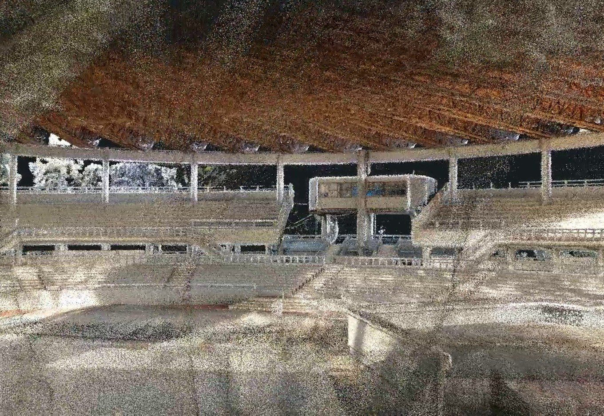
Relevamiento 3D completo, por dentro y por fuera, como base para la verificación estructural de la cubierta y las gradas. La nube se recorre desde un link web.
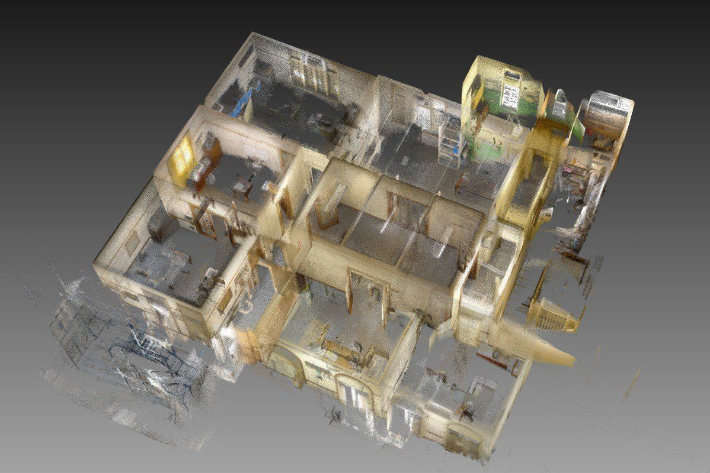
Escaneo 3D interior y exterior, control dimensional, nivelación y fotogrametría aérea y terrestre: nube densa de todo el edificio y malla texturizada para el análisis de restauración.
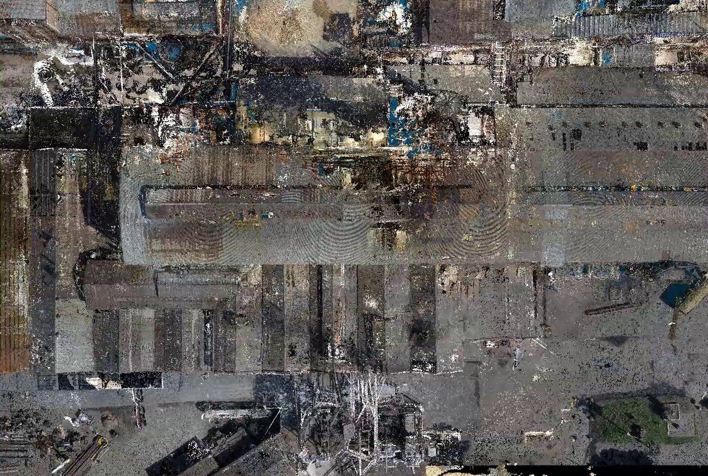
Planos conforme a obra de galpones, entrepisos y estructuras metálicas para proyectar refacciones y ampliaciones.
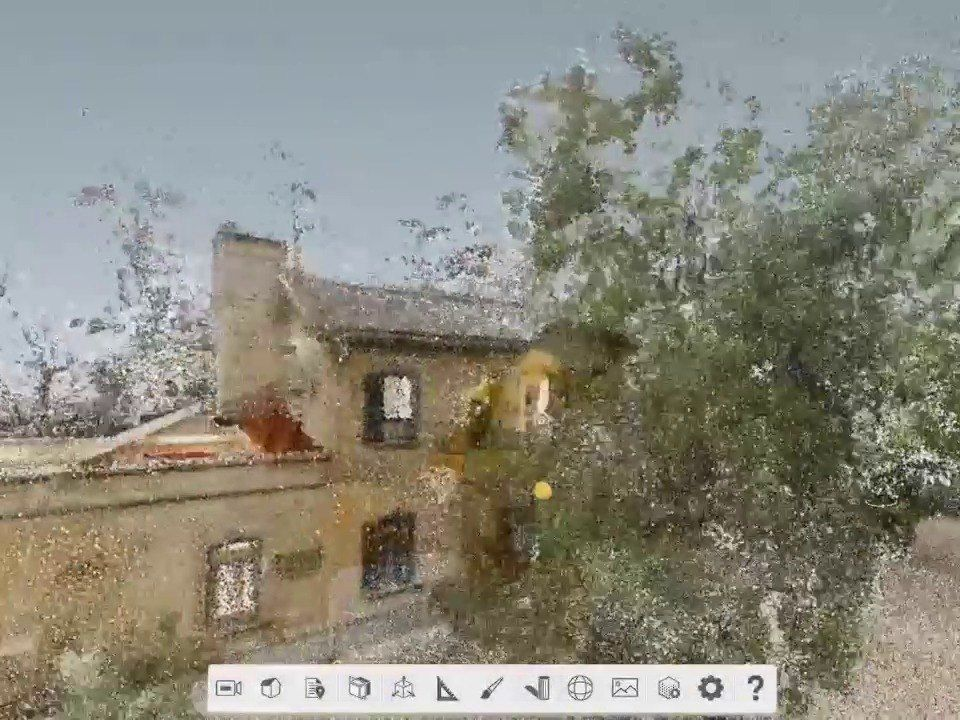
Planos y modelo BIM conforme a obra de una casona sobre un terreno de 2.500 m².
Un bar emblemático del centro. Medimos todo el local con el bar abierto y los clientes en sus mesas. Sin cerrar, sin molestar.
Esto es lo que entregamos: la realidad medida, que se puede recorrer, cortar y consultar desde cualquier computadora.
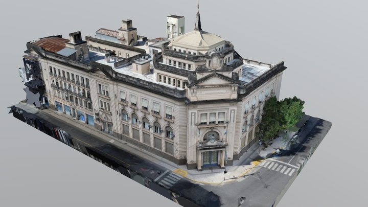
Modelo 3D con las texturas reales de fachadas y cubiertas, a partir de fotos de dron y cámara. Giralo, acercate y recorrelo.
Abrir en pantalla completa ↗Millones de puntos medidos con su color real. Se abre en un visor web: se puede recorrer y medir sin instalar nada.
Depende del equipo, de la distancia a lo que se mide y de si se usan puntos de control. En vez de prometer una cifra genérica, definimos con vos la exactitud que necesita el proyecto y la informamos por escrito en la entrega.
No. El escaneo se hace caminando, con el lugar en funcionamiento. Coordinamos horarios para molestar lo menos posible.
Es un conjunto de millones de puntos medidos, con color, que reproduce el lugar en 3D. Te la entregamos en formatos estándar y, si querés, en un visor web para recorrerla desde cualquier computadora, sin instalar nada.
Planos en PDF y DWG; modelos en Revit (RVT) y en formato abierto IFC; nubes en LAS/E57 o el formato que use tu equipo.
El relevamiento en el lugar suele resolverse en una o pocas visitas. El procesamiento y el modelado dependen de la superficie y del nivel de detalle; el plazo se acuerda por escrito en el presupuesto.
Ubicación, tipo de edificio o instalación, superficie aproximada, para qué vas a usar la información y qué entregables necesitás. Con eso te proponemos el relevamiento justo.
Contanos qué tenés que decidir y te proponemos el relevamiento justo. Para cotizar, indicanos: